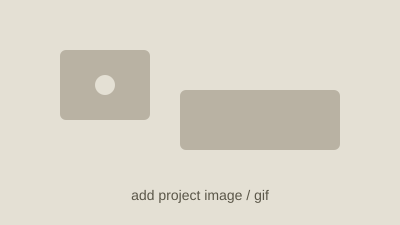
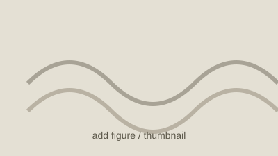

Farnaz Alam Ahmed
MS Robotic Systems Development, Carnegie Mellon University
About
I'm a roboticist working at the intersection of robot learning, computer vision, and embodied AI. My research interests span Vision-Language-Action (VLA) models, world models, and 3D scene understanding. I'm particularly interested in how we can combine rich visual and multimodal representations with learning-based control to give robots robust manipulation and locomotion skills — especially in environments where uncertainty and real-world variability make traditional approaches difficult.
Currently, I'm pursuing an M.S. in Robotic Systems Development at Carnegie Mellon University, where I work on Physical AI, learning-based 3D vision, robot manipulation, and autonomous systems. Long term, I want to build general-purpose embodied AI systems that can learn complex skills, adapt to new environments, and operate reliably in the real world.
I'm always happy to connect with people working in robot learning, embodied AI, humanoid robotics, computer vision, and Physical AI. If you're a student exploring robotics, ML, or graduate school, feel free to reach out — we can set up a brief conversation. If you're working in a lab or research group on embodied intelligence and see opportunities to collaborate, I'd love to hear from you. I'm currently looking for full-time opportunities in robotics and machine learning starting mid-2027. Reach me at farnazaa@andrew.cmu.edu.
Projects
Deep Skill Graph for Humanoid Navigation in Cluttered Space
Jan 2026 – May 2026Intro to Deep Learning course project, CMU
Extended Deep Skill Chaining and Deep Skill Graphs (Bagaria et al., 2020/2021) to humanoid navigation in cluttered environments, learning TD3-based options that output high-level velocity commands and chaining them into a graph via MPC rollouts through a learned Transformer transition model. Evaluated against A* and vanilla TD3 baselines on UMaze and Narrow navigation maps, where the hybrid approach proved more robust across map types than either pure planning or pure RL alone.

Automated Lab
Aug 2025 – PresentMRSD Capstone Project
- Built APEX Labs, a mobile lab-automation robot (a UFactory xArm6 on a swerve-drive base with dual ZED X stereo cameras, LiDAR, and a force-sensing parallel-jaw gripper) that autonomously grasps labware and operates an Opentron liquid handler and a custom shaker end-to-end.
- Also building a training-free video anomaly detection pipeline (O-VAD) that grounds and tracks scene objects (VLM + SAM3 + SAM2/CropFormer) and uses a reasoning VLM to diagnose anomalies with a causal explanation rather than a simple label, running locally on a self-hosted Qwen3-VL-8B backbone.
Experience
Agility Robotics
Jun 2026 – PresentAI Intern · Bangalore
- Building a Universal Manipulation Interface gripper-to-policy pipeline for humanoid Digit, converting multimodal MCAP demonstrations into synchronized datasets used to train, evaluate, and improve learned manipulation policies.
- Developing flow-matching-based policies for Digit and using multimodal robot logs to refine policy behavior, trajectory quality, and sensor-action alignment.
Bharat Electronics Ltd.
Oct 2022 – Jul 2025R&D Engineer, Radar Systems · Bangalore
- Led end-to-end design, qualification, and integration of radar subsystems (Active Array Antenna Unit, Interrogator, and Exciter Receiver Unit), now operational in production at multiple defense sites.
- Developed simulation and visualization environments in Unity to support operator training.

Illumination and Imaging (ILIM) Laboratory, CMU
Nov 2025 – Apr 2026Research Assistant
- Built a 3D reconstruction pipeline using COLMAP for the ULTRRA Challenge dataset, achieving 98.75% image registration, generating 12.9M+ point clouds, and extracting intrinsic/extrinsic parameters for 300+ cameras.
- Evaluated 3D reconstruction methods (VGGT, MapAnything) vs. COLMAP, achieving ~2.6× lower reconstruction error (1.741 → 0.382) and improving point cloud accuracy to 0.677 with bundle adjustment.
JP Morgan Chase & Co. AI Maker Space
Aug 2025 – Jan 2026Technical Assistant · Project
- Fine-tuned Isaac GR00T (N1.6-3B) on Kinova Gen3 pick-and-place demonstrations and deployed a client/server control interface for real-time execution on the robot.
Publications

Numerical Investigation of Thermo-Hydraulic Features of Viscoplastic Flow in Wavy Channels
TL;DR: one-line summary of the paper goes here.
Education
Carnegie Mellon University
May 2027Master of Science in Robotic Systems Development · GPA: 4.08/4
Relevant Coursework: Computer Vision, Robot Mobility & Autonomy, Deep Learning, System Engineering
Bachelor of Technology in Mechanical Engineering · CGPA: 9.5/10